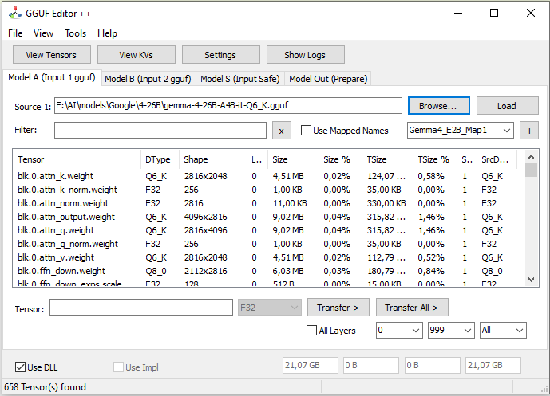

Добро пожаловать в GGUF Editor D++
GGUF Editor D++ — это передовой инструмент для манипуляции, анализа и оптимизации моделей языка (LLM) в форматах GGUF и Safetensors. Разработанный на Delphi, он предлагает высокопроизводительный интерфейс для исследователей и разработчиков.

Главный интерфейс: Визуализация тензоров и управление моделями.
Почему стоит использовать GGUF Editor D++?
- Мульти-источники: Объединяйте GGUF модели с весами Safetensors PyTorch.
- Визуализация в реальном времени: Анализируйте распределение и значения тензоров с помощью интерактивных графиков.
- Высокая производительность: Оптимизированное использование DLL (Llama.cpp) для квантования/дектонирования.
- Расширенное редактирование: Изменение метаданных (KVs) и имен тензоров через маппинг.
Совместимость
Инструмент поддерживает широкий спектр типов квантования: Q4_0, Q4_1, Q5_0, Q5_1, Q8_0, Q8_1, Q2_K, Q3_K, Q4_K, Q5_K, Q6_K, Q8_K, IQ4_NL, MXFP4, NVFP4 и другие.